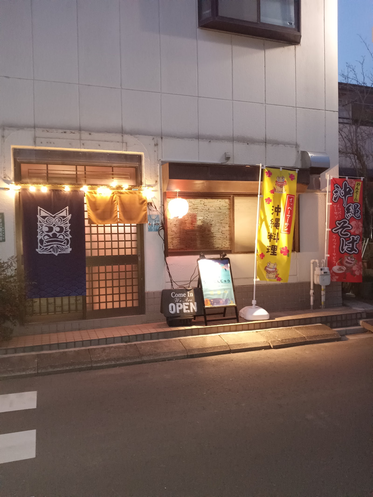

アクセス・店舗情報
写真: ざる大盛(Google マップ)
- 店名
- 沖縄料理 呑み食い処ちゃ～がんじゅう
- 住所
- 〒302-0031 茨城県取手市新取手2丁目26-1
- 営業時間
- ※営業時間は店舗へご確認ください
- 定休日
- ※定休日は店舗へご確認ください
- 座席数・カウンター席
- ※座席数・カウンター席の詳細は店舗へご確認ください
- お支払い方法
- ※クレジットカード等のご利用可否は店舗へご確認ください
- 駐車場
- ※駐車場の有無は店舗へご確認ください
- 最寄駅
- 常総線 新取手駅(お客様の声に「徒歩5分ほど」との声があります。所要時間の目安は店舗へご確認ください)
Instagramで最新情報をチェック
Instagramを見るお電話でのお問い合わせ・ご予約
070-3189-7712